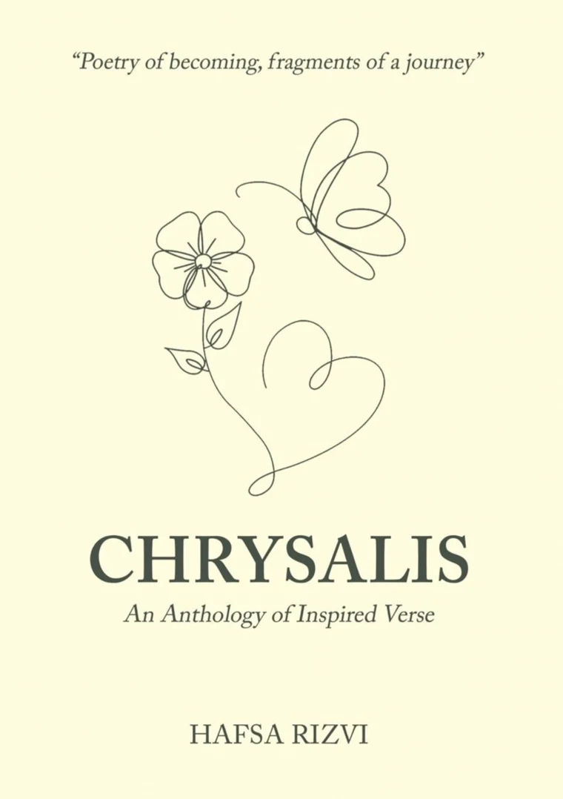

I am a writer drawn to the spaces where ideas, people and stories meet.
My writing moves across literary fiction, poetry, personal reflection, technology and professional content. I enjoy writing about the things that often sit beneath the surface: memory, identity, silence, loss, resilience, relationships, human behaviour and the ways people make sense of the world around them.
Alongside creative writing, I have developed experience in technology writing, B2B content, digital storytelling and professional communication, which lets me move comfortably between a literary page and a business audience.
My approach is simple: make the reader feel something, think about something, or see something differently.
Read my writing portfolioMy writing journey
My writing has developed across both creative and professional spaces. I have written and published pieces for literary and media platforms, taken part in writing programmes, received recognition for my creative work, and published my first poetry collection, Chrysalis: An Anthology of Inspired Verse.
Creatively, I keep returning to a handful of themes.
Professionally, my writing has expanded into technology, B2B content and digital communication, where I translate ideas into accessible, engaging content for modern audiences.
CLEAF Future Writers Programme 2025
AwardWinner
ProgrammeCLEAF Future Writers Programme
Year2025
Winning workWhispers from the Jungle
I was selected as a winner of the CLEAF Future Writers Programme 2025 for my creative work, Whispers from the Jungle. The programme gave me the chance to develop my writing alongside other emerging writers and to explore storytelling rooted in imagination, place and human experience.
Winning remains one of the milestones that shaped my confidence as a writer and encouraged me to take my literary work more seriously.

Chrysalis
An Anthology of Inspired Verse
My debut poetry collection, bringing together poems written around love, longing, memory, loss, resilience, nature, self-discovery and transformation.
The title reflects the central idea behind the book: the process of becoming. Like a chrysalis, many of the poems explore moments of stillness, vulnerability, change and the gradual emergence of a new self.
Among the poems
- An Awe-Inspiring Father
- Are Colours Alive?
- Astonishing Love: A Tale of Fate and Destiny
- Escalation of Adore
- Healthy Mother
- Life in a Second
- Vulnerable
- You Are Your Own Competition!
- The Keeper of Moments
- Looking Up
- Whispers of Serenity
- The Grumpy Devil
- The Haunted World
- Miles from Material Care
Launched on 21 September 2026. The hardcover edition is available through M.D. Gunasena, and the eBook through Gurlugomi.lk, reaching readers across 22 countries.
For me, it is more than a published book. It is a record of thoughts, emotions and observations gathered across different seasons of life.
Where my writing has appeared
Daily Mirror
TechnologyTechnology-focused writing exploring contemporary digital topics for a broader readership.
Life.LK
TechnologyTechnology-related content that makes technical and digital subjects accessible to general audiences.
Spellbinder
“My Grandfather’s Watch”A creative piece on memory, family and the emotional weight that ordinary objects can carry.
Folklore Review
“The Mango Tree Whispers”A literary piece drawing on storytelling, place and the relationship between people, memory and the natural world.
Jam Fruit Tree
“The Last Avurudu at Home”A reflective piece centred on home, memory and the emotional meaning of tradition.
Where I write what does not fit professional language
I am drawn to stories and poems that examine what people remember, what they leave unsaid and how experiences change them. Rather than writing around plot, I look for atmosphere, emotional detail and the small moments that reveal something larger about a person.
Literary fiction
Stories centred on emotion, identity, memory and human relationships.
Poetry
Free-form and reflective poetry on love, loss, nature, resilience and self-discovery.
Personal essays and reflections
Writing that examines experiences, observations and the quieter questions of everyday life.
Cultural storytelling
Stories shaped by place, family, tradition, memory and the Sri Lankan experience.
Technology and professional writing
My writing is not limited to literary work. I have a strong interest in technology and digital communication, particularly in making complex ideas understandable and engaging.
Combining creative and professional writing lets me approach content with both clarity and personality. I can write for a professional audience without making the writing feel mechanical, and bring structure to creative ideas without stripping them of their character.
People and the stories they carry
Memory
The places, people and moments that remain long after they have passed.
Identity
The process of understanding who we are and who we are becoming.
Love and loss
The emotions that shape us, whether they stay or leave.
Home
Belonging, family, nostalgia and the meaning attached to familiar places.
Resilience
The quiet process of rebuilding, changing and continuing.
Technology
The rapidly changing world around us and the human stories behind it.
Ideas
Making complex subjects accessible without losing their depth.
Why should someone want to keep reading?
Writing has become one of the ways I understand the world. Whether it is a poem, a technology article, a LinkedIn post or a longer creative piece, I begin with that same question. Sometimes the answer is an emotion, sometimes an idea or a story, and sometimes it is simply a sentence that makes someone pause.
Read my full writing portfolio